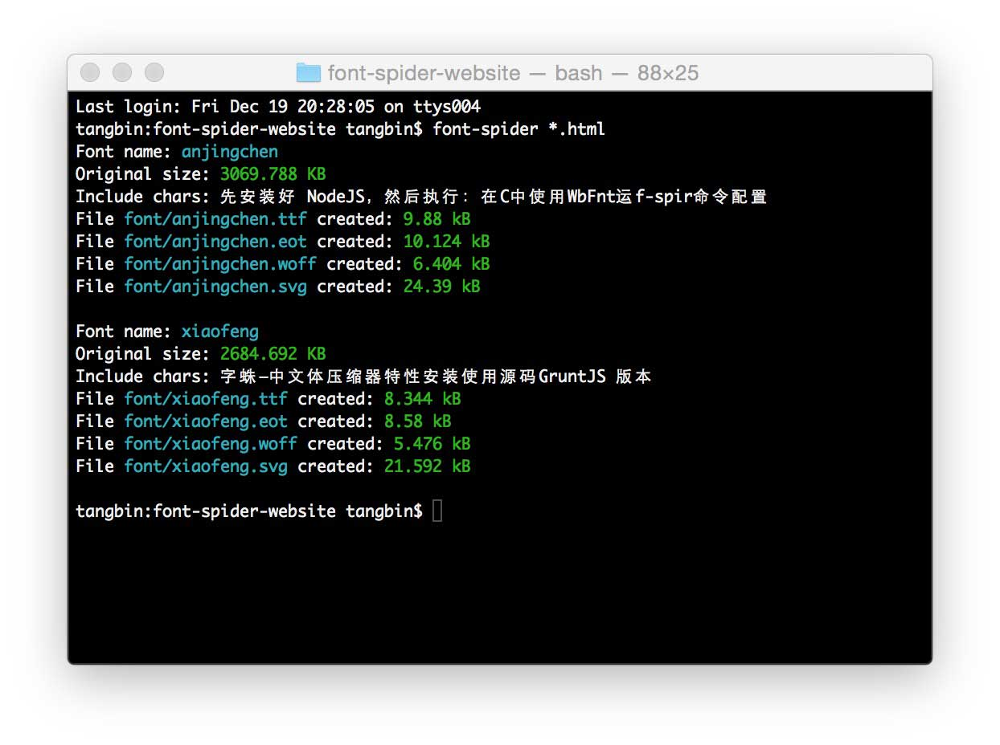

字蛛-中文字体压缩器
让网页自由引入中文字体成为可能

字蛛通过分析本地 CSS 与 HTML 文件获取 WebFont 中没有使用的字符，并将这些字符数据从字体中删除以实现压缩，同时生成跨浏览器使用的格式。
/*声明 WebFont*/
@font-face {
font-family: 'pinghei';
src: url('../font/pinghei.eot');
src:
url('../font/pinghei.eot?#font-spider') format('embedded-opentype'),
url('../font/pinghei.woff') format('woff'),
url('../font/pinghei.ttf') format('truetype'),
url('../font/pinghei.svg') format('svg');
font-weight: normal;
font-style: normal;
}
/*使用选择器指定字体*/
.home h1, .demo > .test {
font-family: 'pinghei';
}
1. @font-face 中的 src 定义的 .ttf 文件必须存在，其余的格式将由工具自动生成
2. 开发阶段请使用相对路径的 CSS 与 WebFont
font-spider ./demo/*.html页面依赖的字体将会自动压缩好，原 .ttf 字体会备份